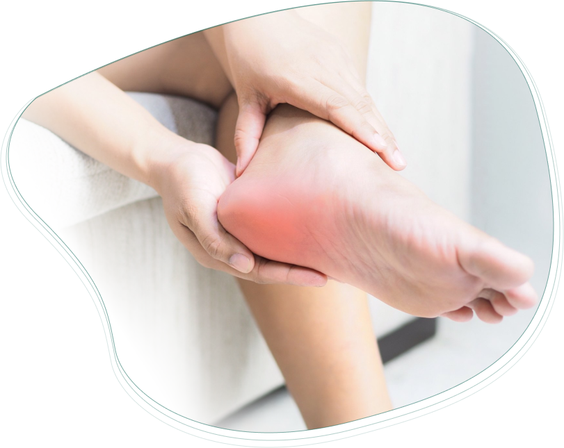
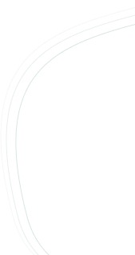
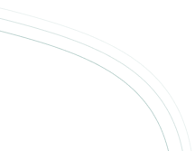
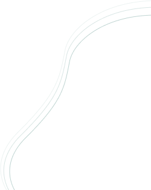

КАК ВЫЛЕЧИТЬ
ПЯТОЧНУЮ ШПОРУ
Избавьтесь от пяточной шпоры за 6 недель по методике Научно-производственного центра Сурсил-Орто
смотреть методику

Избавьтесь от пяточной шпоры за 6 недель по методике Научно-производственного центра Сурсил-Орто
смотреть методикуПлантарный фасциит – частичный отрыв специальной амортизирующей связки стопы от пяточной кости в месте крепления с воспалением в месте отрыва
Плантарный фасциит часто называют пяточной шпорой. Так как часто в области крепления плантарной фасции на рентгене можно наблюдать костный вырост. Но последние исследования говорят о том, что сам вырост не является причиной боли. Несколько лет назад в США было проведено исследование, в рамках которого 1000 человек, никогда не испытывавшим боли в области пятки, сделали рентген, и в 30% случаев нашли костный вырост.
Параллельно провели рентгенографию пяточной кости 1000 человек, которые испытывали боль в пятке. И в тех же 30% был обнаружен костный вырост («пяточная шпора»). Что еще раз подтверждает утверждение о том, что причиной боли является не «шпора», а воспаление плантарной фасции.
Пяточная шпора - одна из самых частых патологий стопы у людей в возрасте 45+. Где тонко, там и рвется. Ключевой причиной появления пяточной шпоры является высокий износ сухожильно-связочного аппарата стопы. Лишний вес, плоскостопие, несбалансированный рацион и высокие нагрузки изнашивают фасцию. Спусковым механизмом может стать мелкая бытовая травма стопы или только что перенесенный covid. И каждое утро превращается в испытание. Каждый шаг становится испытанием. Рефлекторно стараясь снять нагрузку со стоп, перегружаем колени и тазобедренный сустав - неминуемо возникает усталость, дискомфорт, боль. Все чаще начинает беспокоить спина, нагрузка на которую также возрастает.
Во время сна, когда стопа в состоянии покоя, происходит срастание разорванных воспаленных участков фасции. Сон лучший доктор. Проблема лишь в том, что во время сна плантарная фасция не испытывает натяжения. Фасция заживает и срастается в сокращенной фазе. Как только Вы встаете с постели и делаете первый шаг, плантарная фасция вынужденно существенно растягивается. И только что почти зажившие ткани вновь рвутся, вызывая острую нестерпимую боль.
 Пяточная шпора – это возрастной сигнал. Чтобы сохранить стопу и вышележащие суставы, Вам нужно начать заботиться о себе: изменить и обогатить рацион, скорректировать физическую активность, возможно, заменить обувь или познакомиться с ортопедическими стельками. Но сначала, заживить плантарную фасцию.
Ключевым условием избавления от пяточной шпоры является правильное заживление разрыва плантарной фасции. Такое заживление, результат которого сохранялся бы не только в состоянии покоя, но и в процессе ходьбы.